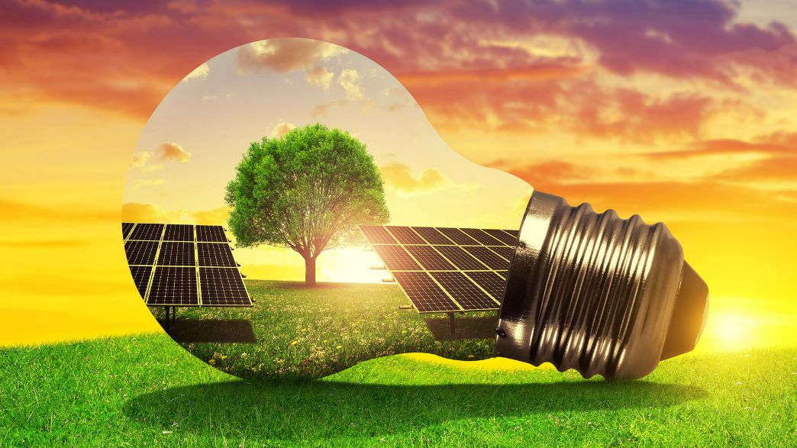
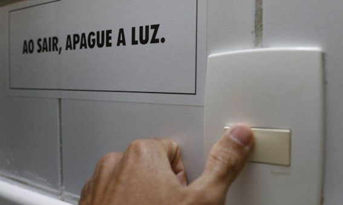

Desperdício de energia

O desperdício de energia é o consumo ineficiente ou desnecessário que não gera trabalho útil, resultando em altos custos e perdas de até 43 TWh por ano no Brasil, equivalente ao consumo de 20 milhões de residências. Causado por equipamentos antigos, má vedação (frestas) e hábitos, combate-se com conscientização, manutenção e eficiência.
Principais Causas do Desperdício:
- Frestas e Vedação: Portas, janelas e vãos permitem a entrada de ar externo, fazendo o
ar-condicionado trabalhar excessivamente; - Aparelhos em Standby: Carregadores na tomada e eletrônicos em modo de espera consomem
energia silenciosamente; - Equipamentos Ineficientes: Geladeiras, chuveiros e lâmpadas antigas consomem muito mais
do que os modelos modernos (LED, selo Procel); - Mau Uso da Climatização: Manter ar-condicionado em temperaturas muito baixas ou com janelas
abertas; - Fiação Antiga: Instalações antigas ou com fiação desgastada causam "fugas" de energia,
dissipando-a na forma de calor.
Como Evitar o Desperdício:
- Vede frestas: Use rolinhos de porta, borrachas de vedação e feche cortinas para manter a
temperatura do ambiente; - Tire aparelhos da tomada: Desconecte carregadores e eletrônicos que não estão sendo usados;
- Iluminação LED: Substitua lâmpadas incandescentes ou fluorescentes por LED;
- Manutenção preventiva: Limpe filtros de ar-condicionado e verifique a instalação elétrica
periodicamente; - Hábitos de consumo: Reduza o tempo de banho, use a máquina de lavar com carga cheia e
evite abrir a geladeira sem necessidade.
Link com mais dicas para evitar desperdicio de energia pelo gov:
//www.gov.br/ana/pt-br/todos-os-documentos-do-portal/documentos-gab/cosus/dicas-ambientais-da-a3p-evitamento-desperdicio-de-energia.pdf

Fonte: FIESC, Gov e BV